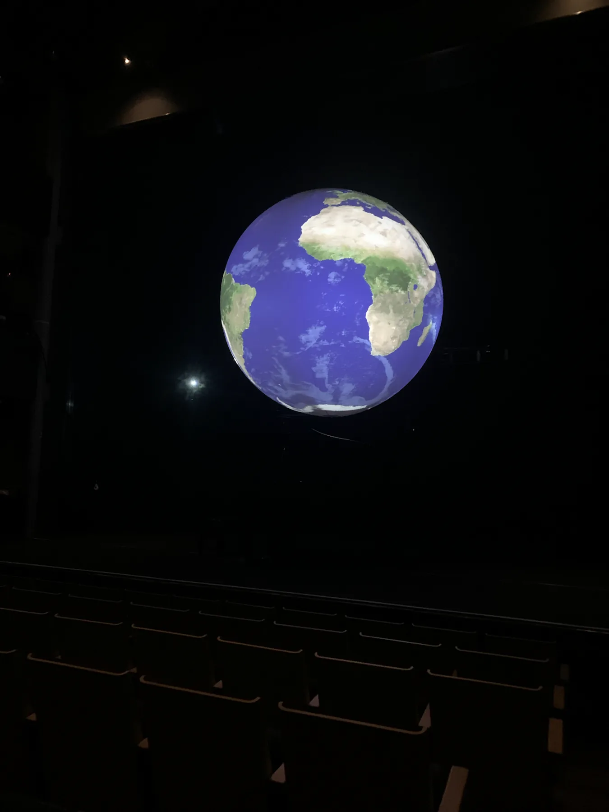

Video Engineer
Sphere Projection Mapping
Projection mapping and video engineering for an experimental sphere installation.
My role
Video Engineer
I was the video engineer for an experimental show where we projected onto a sphere as a globe above a performer. I used D3's OmniCal system to adjust the mapping from four projectors.
Production Planning
-
When given the original brief, I was able to contact an inflatable company to rent an inflatable sphere that had the right material to project onto.
I then put the sphere and projectors that were available to us into D3 and planned the best angles and hanging points for them. I compared the positions within D3 to positions in Vectorworks to get the best rigging points for the projectors.
-
I was able to use the OmniCal system with four cameras to accurately projection map the sphere, so that any content we put on the sphere in Disguise ended up accurately mapped in D3.
My first test was downloading some equirectangular files from NASA, which mapped nicely onto the sphere. I was then able to render some effects within TouchDesigner, one of my favourites being lighting around the sphere.
Once this was all mapped, I was able to hand over to a content designer who created some base content to display on the sphere.